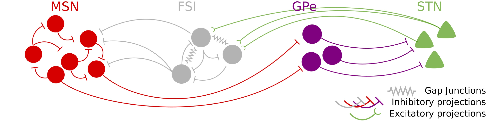
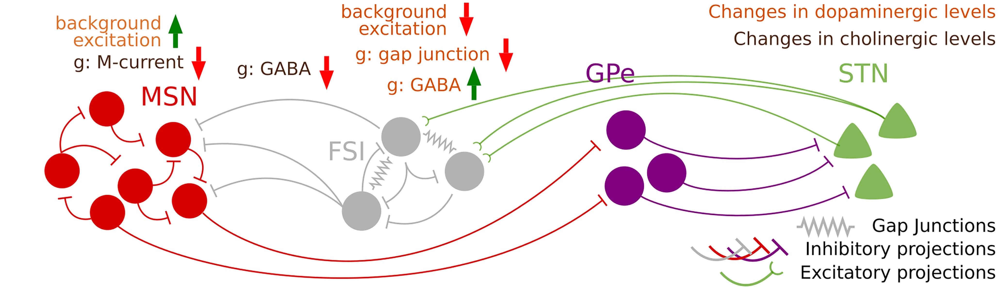

Basal Ganglia Model and Parkinson's Disease Simulation
Introduction
This tutorial demonstrates how to build and simulate a basal ganglia model using Neuroblox, based on the work of Adam et al. (2022). We'll explore the model's behavior in both normal and Parkinsonian conditions, showcasing the emergence of pathological beta oscillations characteristic of Parkinson's disease.

In previous tutorials, we explored building neural circuits from individual neuron bloxs and creating networks using neural mass bloxs. Here, we'll demonstrate how Neuroblox enables modeling of complex brain structures using specialized composite bloxs that encapsulate entire neural populations. These composite bloxs represent distinct neuronal populations within the basal ganglia, each containing multiple Hodgkin-Huxley neurons with their characteristic properties and intrinsic connectivity patterns.
We'll start with simple components and gradually build up to the full basal ganglia circuit, demonstrating how to analyze the results at each stage.
using Neuroblox
using StochasticDiffEq ## For building and solving differential equations problems
using CairoMakie ## For plotting
using Random ## For setting a random seed
Random.seed!(123) ## Set a random seed for reproducibilityRandom.TaskLocalRNG()Isolated MSN network in baseline condition
We'll start by simulating an isolated network of Medium Spiny Neurons (MSNs)
Blox definition
N_MSN = 100 ## number of Medium Spiny Neurons
@named msn = Striatum_MSN_Adam(N_inhib = N_MSN)
sys = structural_simplify(get_system(msn))
# Check the system's variables (100 neurons, each with associated currents)
unknowns(sys)600-element Vector{SymbolicUtils.BasicSymbolic{Real}}:
inh1₊V(t)
inh1₊n(t)
inh1₊m(t)
inh1₊h(t)
inh1₊mM(t)
inh1₊G(t)
inh2₊V(t)
inh2₊n(t)
inh2₊m(t)
inh2₊h(t)
⋮
inh99₊h(t)
inh99₊mM(t)
inh99₊G(t)
inh100₊V(t)
inh100₊n(t)
inh100₊m(t)
inh100₊h(t)
inh100₊mM(t)
inh100₊G(t)Create and solve the SDE problem
# Define simulation parameters
tspan = (0.0, 2000.0) ## simulation time span [ms]
dt = 0.05 ## time step for solving and saving [ms]
# Create a stochastic differential equation problem and use the RKMil method to solve it
prob = SDEProblem(sys, [], tspan, [])
sol = solve(prob, RKMil(), dt = dt, saveat = dt);Plot voltage of a single neuron
v = voltage_timeseries(msn, sol)
fig = Figure()
ax = Axis(fig[1,1]; xlabel = "Time (ms)", ylabel = "Voltage (mv)")
lines!(ax, sol.t, v[:, 1])
fig ## to display the figurePlot mean field
meanfield(msn, sol, title = "Mean Field Potential")Compute firing rate, discarding the first 200 ms
fr = firing_rate(msn, sol, threshold=-35, transient=200)1-element Vector{Float64}:
1.2666666666666666Create a raster plot
rasterplot(msn, sol, threshold = -35, title = "Neuron's Spikes - Mean Firing Rate: $(round(fr[1], digits=2)) spikes/s")Compute and plot the power spectrum of the GABAa current
fig = Figure(size = (1500, 500))
powerspectrumplot(fig[1,1], msn, sol, state = "G",
title = "FFT with no window")
powerspectrumplot(fig[1,2], msn, sol, state = "G",
method = welch_pgram, window = hanning,
title = "Welch's method + Hanning window")
figWe can leverage parallel computing using EnsembleProblem() to run multiple simulations simultaneously. This allows us to evaluate model outputs with multiple realizations of random physiological noise while utilizing all available computational threads (default) or processes.
ens_prob = EnsembleProblem(prob)
ens_sol = solve(ens_prob, RKMil(), dt=dt, saveat=dt, trajectories = 3);Compute average power spectrum
powerspectrumplot(msn, ens_sol, state = "G",
method = welch_pgram, window = hanning,
title = "Welch's method + Hanning window + Ensemble")Note the peak at ~12 Hz in the MSN population's activity, representing an emergent beta-band oscillation characteristic of this circuit. We'll explore how this rhythm is altered by FSI inhibition next.
Core striatal network: MSN + FSI
Now we'll add Fast-Spiking Interneurons (FSIs) to our model
global_ns = :g ## global name for the circuit. All components should be inside this namespace.
N_FSI = 50 ## number of Fast Spiking Interneurons
@named msn = Striatum_MSN_Adam(namespace = global_ns, N_inhib = N_MSN)
@named fsi = Striatum_FSI_Adam(namespace = global_ns, N_inhib = N_FSI)
ḡ_FSI_MSN = 0.6 ## maximal conductance for FSI to MSN synapses [mS/cm^-2]
density_FSI_MSN = 0.15 ## fraction of FSIs connecting to the MSN population
weight_FSI_MSN = ḡ_FSI_MSN / (N_FSI * density_FSI_MSN) ## normalized synaptic weight
g = MetaDiGraph()
add_edge!(g, fsi => msn, weight = weight_FSI_MSN, density = density_FSI_MSN)
@named sys = system_from_graph(g)
prob = SDEProblem(sys, [], tspan, [])
ens_prob = EnsembleProblem(prob)
ens_sol = solve(ens_prob, RKMil(), dt=dt, saveat = dt, trajectories = 3);Compute firing rates for comparison
fr_msn = firing_rate(msn, ens_sol[1], threshold=-35, transient=200)
fr_fsi = firing_rate(fsi, ens_sol[1], threshold=-35, transient=200)1-element Vector{Float64}:
10.511111111111111Let's see their raster plots and power spectra
fig = Figure(size = (1000, 800))
rasterplot(fig[1,1], msn, ens_sol[1], threshold = -35, title = "MSN - Mean Firing Rate: $(round(fr_msn[1], digits=2)) spikes/s")
rasterplot(fig[1,2], fsi, ens_sol[1], threshold = -35, title = "FSI - Mean Firing Rate: $(round(fr_fsi[1], digits=2)) spikes/s")
powerspectrumplot(fig[2,1], msn, ens_sol, state = "G",
method = welch_pgram, window = hanning,
ylims= (-35, 15),
xlims= (8, 100))
powerspectrumplot(fig[2,2], fsi, ens_sol, state = "G",
method=welch_pgram, window=hanning,
ylims= (-35, 15),
xlims= (8, 100))
figFSIs exhibit a peak in gamma frequencies. Their inhibition onto MSNs suppresses the low beta-band activity seen in isolated MSN populations, without reducing MSN firing rates. This spectral shift reflects a change in MSN spiking dynamics under FSI influence, rather than a decrease in overall activity.
Full basal ganglia model in baseline condition
Now we'll add the GPe and STN to complete the full basal ganglia model
N_GPe = 80 ## number of GPe neurons
N_STN = 40 ## number of STN neurons
@named gpe = GPe_Adam(namespace = global_ns, N_inhib = N_GPe)
@named stn = STN_Adam(namespace = global_ns, N_exci = N_STN)
ḡ_MSN_GPe = 2.5 ## maximal conductance for MSN to GPe synapses [mS/cm^-2]
ḡ_GPe_STN = 0.3 ## maximal conductance for GPe to STN synapses [mS/cm^-2]
ḡ_STN_FSI = 0.165 ## maximal conductance for STN to FSI synapses [mS/cm^-2]
density_MSN_GPe = 0.33 ## fraction of MSNs connecting to the GPe population
density_GPe_STN = 0.05 ## fraction of GPe neurons connecting to the STN population
density_STN_FSI = 0.1 ## fraction of STN neurons connecting to the FSI population
weight_MSN_GPe = ḡ_MSN_GPe / (N_MSN * density_MSN_GPe)
weight_GPe_STN = ḡ_GPe_STN / (N_GPe * density_GPe_STN)
weight_STN_FSI = ḡ_STN_FSI / (N_STN * density_STN_FSI)
g = MetaDiGraph()
add_edge!(g, fsi => msn, weight = weight_FSI_MSN, density = density_FSI_MSN)
add_edge!(g, msn => gpe, weight = weight_MSN_GPe, density = density_MSN_GPe)
add_edge!(g, gpe => stn, weight = weight_GPe_STN, density = density_GPe_STN)
add_edge!(g, stn => fsi, weight = weight_STN_FSI, density = density_STN_FSI)
@named sys = system_from_graph(g)
prob = SDEProblem(sys, [], tspan, [])
ens_prob = EnsembleProblem(prob)
ens_sol = solve(ens_prob, RKMil(), dt=dt, saveat = dt, trajectories = 3);Compute and plot power spectra for all components
fig = Figure(size = (1600, 450))
powerspectrumplot(fig[1,1], msn, ens_sol, state = "G",
method = welch_pgram, window = hanning,
ylims=(-40, 25),
title = "MSN (Baseline)")
powerspectrumplot(fig[1,2], fsi, ens_sol, state = "G",
method = welch_pgram, window = hanning,
ylims=(-40, 25),
title = "FSI (Baseline)")
powerspectrumplot(fig[1,3], gpe, ens_sol, state = "G",
method = welch_pgram, window = hanning,
ylims=(-40, 25),
title = "GPe (Baseline)")
powerspectrumplot(fig[1,4], stn, ens_sol, state = "G",
method = welch_pgram, window = hanning,
ylims=(-40, 25),
title = "STN (Baseline)")
figFull basal ganglia model in Parkinson's condition
Finally, we'll adjust the model parameters to simulate Parkinson's disease conditions

The key changes from baseline to Parkinsonian conditions are:
For MSNs:
- Increased background excitation (
I_bg) to 1.2519 μA·cm$^{-2}$ - Decreased maximal conductance for M-current (
G_M) to 1.2 mS·cm$^{-2}$
- Increased background excitation (
For FSIs:
- Decreased background excitation (
I_bg) to 4.511 μA·cm$^{-2}$ - Decreased maximal conductance of FSI-MSN projection (
ḡ_FSI_MSN) by 20% to 0.48 mS·cm$^{-2}$, due to increased cholinergic tone - Decreased maximal conductance of FSI-FSI projection (
weight) to 0.2 mS·cm$^{-2}$ - Decreased electrical conductance (
g_elec) to 0.075
- Decreased background excitation (
These changes reflect the loss of dopamine and increase in cholinergic tone characteristic of Parkinson's disease.
Create bloxs with Parkinsonian parameters
@named msn = Striatum_MSN_Adam(namespace = global_ns, N_inhib = N_MSN, I_bg = 1.2519*ones(N_MSN), G_M = 1.2)
@named fsi = Striatum_FSI_Adam(namespace = global_ns, N_inhib = N_FSI, I_bg = 4.511*ones(N_FSI), weight = 0.2, g_weight = 0.075)
ḡ_FSI_MSN = 0.48 ## decreased maximal conductance of FSI-MSN projection [mS/cm^-2]
weight_FSI_MSN = ḡ_FSI_MSN / (N_FSI * density_FSI_MSN) ## normalized synaptic weight
g = MetaDiGraph()
add_edge!(g, fsi => msn, weight = weight_FSI_MSN, density = density_FSI_MSN)
add_edge!(g, msn => gpe, weight = weight_MSN_GPe, density = density_MSN_GPe)
add_edge!(g, gpe => stn, weight = weight_GPe_STN, density = density_GPe_STN)
add_edge!(g, stn => fsi, weight = weight_STN_FSI, density = density_STN_FSI)
@named sys = system_from_graph(g)
prob = SDEProblem(sys, [], tspan, [])
ens_prob = EnsembleProblem(prob)
ens_sol = solve(ens_prob, RKMil(), dt = dt, saveat = dt, trajectories = 3);Compute and compare power spectra for all neural populations in Parkinsonian condition against their counterparts in baseline conditions.
powerspectrumplot(fig[2,1], msn, ens_sol, state = "G",
method = welch_pgram, window = hanning,
ylims=(-40, 25),
title = "MSN (PD)")
powerspectrumplot(fig[2,2], fsi, ens_sol, state = "G",
method = welch_pgram, window = hanning,
ylims=(-40, 25),
title = "FSI (PD)")
powerspectrumplot(fig[2,3], gpe, ens_sol, state = "G",
method = welch_pgram, window = hanning,
ylims=(-40, 25),
title = "GPe (PD)")
powerspectrumplot(fig[2,4], stn, ens_sol, state = "G",
method = welch_pgram, window = hanning,
ylims=(-40, 25),
title = "STN (PD)")
resize!(fig.scene, (1600, 900))
figWe see the emergence of strong beta oscillations in the Parkinsonian condition compared to the baseline condition for all neural populations. This aligns with the findings of Adam et al. and reflects the pathological synchrony observed in Parkinson's disease.
References
This page was generated using Literate.jl.